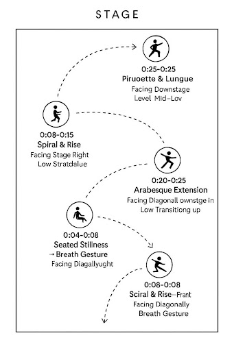

We set out to explore how generative AI could assist in producing choreographic sequences, and what limitations or strengths it might have in the realm of artistic movement.
OUR EXPERIMENT
How We Made the AI Dance
We crafted a precise prompt for ChatGPT and selected OpenPose and Blender for generating motion and visualizing sequences.

We structured commands and prompts to create legible pose and motion data interpretable by our tools.
We evaluated the AI's generated poses, edited frames for rhythm, and eliminated awkward transitions.
The final sequence was taught to Ava, who added interpretation and style, bringing the AI-assisted choreography to life.